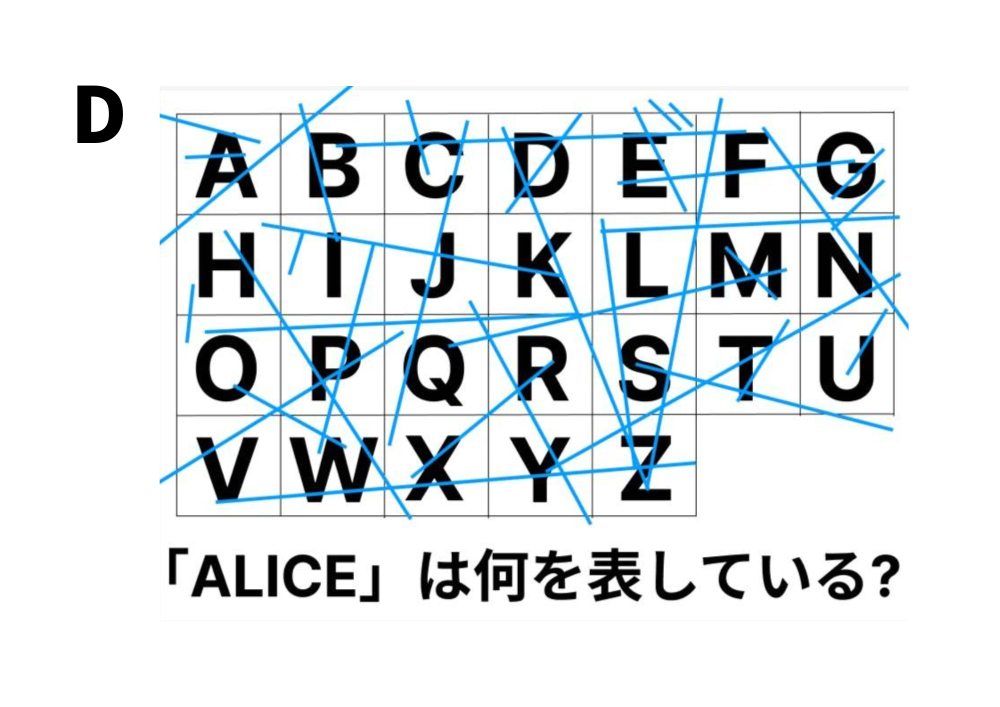
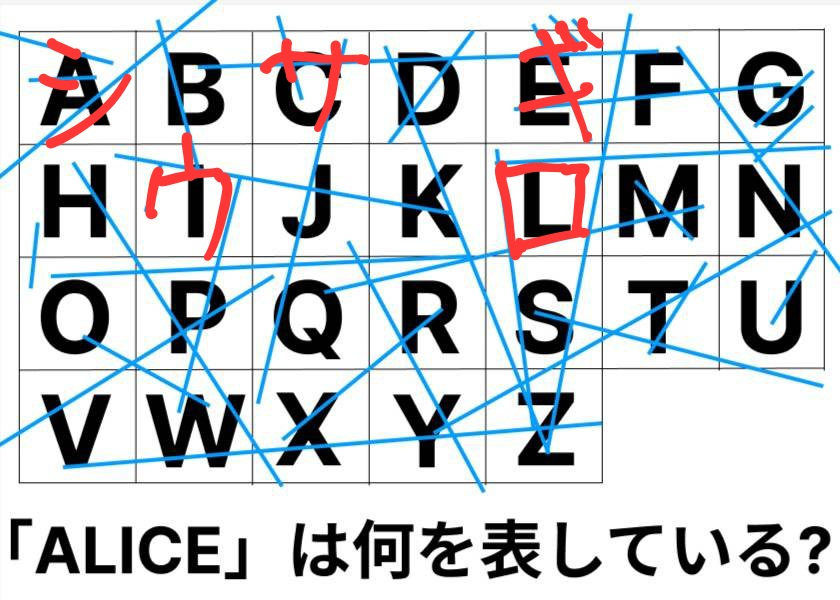
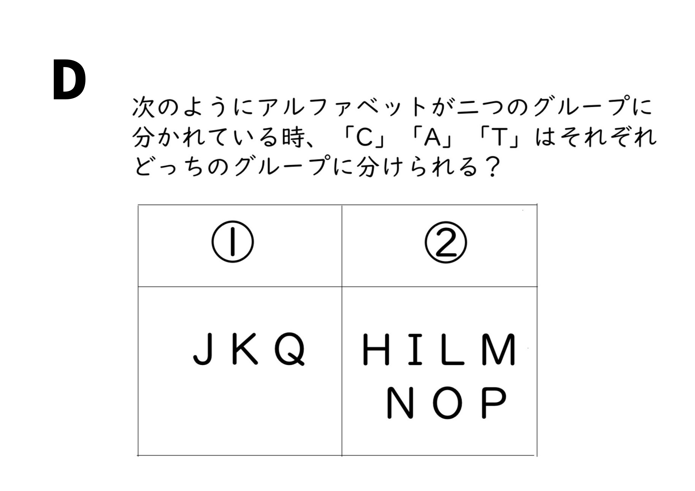
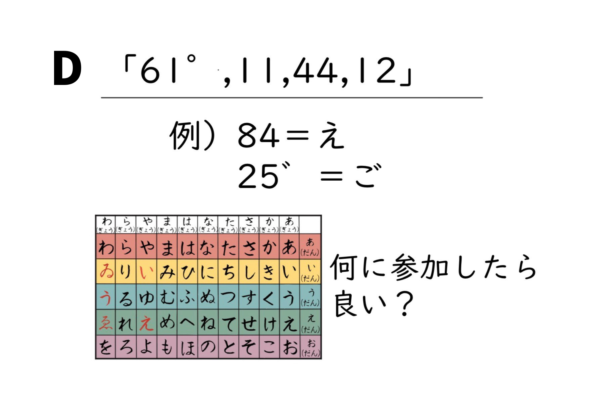
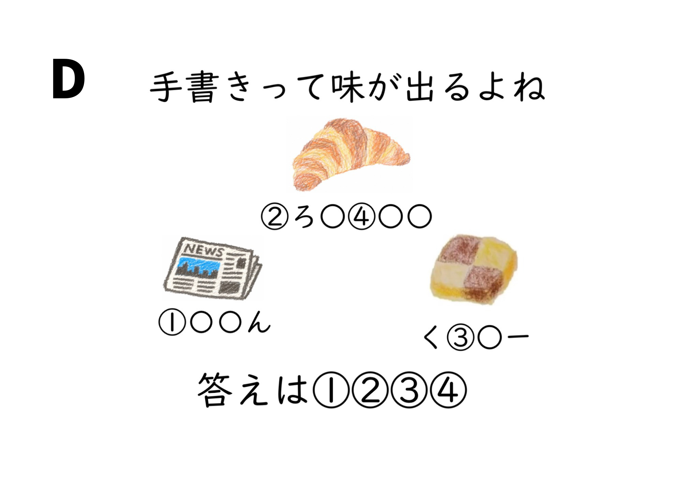

第1問

解答：
シロウサギ
解説
アルファベット表に線が無作為に並べられているように見えるが、それぞれALICEの文字が書いてある四角の中を読む。下の画像のようにそれぞれカタカナでシロウサギと読める。

第2問

解答：
C→② A→① T→②
解説
①はトランプにあるアルファベット、②はトランプにないアルファベットのグループ。「C」「A」「T」のうち、トランプにあるアルファベットは「A」のみ。よって、 C→② A→① T→②となる。
第3問

解答：
パーティー（ぱあてい、ぱーてぃなども可）
解説
数字の左側は1番左の行（あ行）から何行目かを表している。数字の右側は1番上の段（あ段）から何段目かを表している。
数字の右上に濁点がついている場合は、その文字に濁点がつくということ。同様に半濁点がつく場合にはその文字に半濁点がつくということ。それにのっとって１文字ずつ調べていくと、左から「ぱ」「あ」「て」「い」となるので、答えは「パーティー」。「ぱあてい」と導くことができたら正解となる。
第4問

解答：
クイーン
解説
この絵が何で描かれているかに注目する。
すると、一番上はいろえんぴつになるので、②＝い ④＝ん になる。
左下はクレヨンで①＝くとなる。右下はクーピーとなり③＝ー（伸ばし棒）になる。
以上のことから、①②③④の順に並び変えて、答えは「クイーン」
← コース選択に戻る